Brain Tumor Treatment in Bangalore
A brain tumor is an abnormal growth of cells in the brain or in the tissues around it. Some are benign (not cancer) and grow slowly, while others are malignant and grow fast. Many brain tumors can be removed or well controlled when found early, and the right treatment depends on the exact type.

Overview
What is a brain tumor?
Your brain controls everything you do: thinking, speaking, moving, seeing and breathing. A brain tumor forms when cells in or around the brain — such as the nerves, the pituitary gland or the coverings of the brain — grow out of control and form a mass. Both benign and malignant tumors can cause serious problems because the skull has no room to expand.
A tumor can cause problems in two ways: by pressing on or damaging nearby brain tissue, and by blocking the flow of fluid around the brain, which raises pressure inside the skull. Even a benign brain tumor can be serious if it grows in an important area — that is why every brain tumor needs expert care.
Dr. Neema Bhat, a US-trained pediatric hematologist-oncologist with 10+ years of experience, works with neurosurgeons and radiation oncologists to plan complete brain tumor treatment in Bangalore, with special expertise in children.
Two main groups
- Primary brain tumors start in the brain or its surrounding tissues. They can be benign or malignant.
- Secondary (metastatic) brain tumors start in another part of the body, such as the lungs, breast or kidney, and spread to the brain. In adults, these are more common than primary brain tumors.
India sees over 28,000 new brain tumor cases every year (IARC data). Brain tumors are also among the most common cancers in children, after leukemia and lymphoma. Early signs like headaches and vomiting are easy to ignore, so timely brain tumor treatment in Bangalore can protect brain function and quality of life.
Signs & symptoms
Common signs of a brain tumor
Symptoms depend on the size and location of the tumor. Watch for:
- HeadachesNew, getting worse, or worse in the morning or when lying down
- Nausea or vomitingEspecially in the morning
- Fits (seizures)Especially for the first time in an adult
- Vision problemsBlurred or double vision, or loss of side vision
- Weakness or numbnessIn an arm, leg or one side of the body
- Balance problemsTrouble with walking or coordination
- Speech problemsTrouble speaking or understanding words
- Behaviour changesChanges in memory, mood or personality
- Unusual sleepinessOr confusion
- Hearing changesHearing loss or ringing in one ear
- Hormone problemsIrregular periods, unusual growth or milk production (pituitary tumors)
Brain tumor symptoms in children
Children may have morning headaches with vomiting, unsteady walking, a squint, a head tilt, delayed or lost milestones, early or delayed puberty, poor growth, or a drop in school performance. In babies, the head may grow too fast or the soft spot on the head may bulge. Dr. Neema Bhat is a US board-certified pediatric hematologist-oncologist, so children with brain tumors get specialised care.
See a doctor urgently
If you or your child has a sudden severe headache, repeated vomiting, a first fit, sudden weakness on one side, sudden loss of vision, or becomes very drowsy or hard to wake.
What causes brain tumors and who is at risk?
In most people, the exact cause is not known. It starts with changes (mutations) in the genes of brain cells. Brain tumors are not contagious, and current research has not shown that mobile phones cause them. The risk is higher for:
- Age: some types are more common in children, and others in adults over 50
- Radiation exposure: previous radiation to the head, such as for an earlier cancer
- Inherited genetic conditions: neurofibromatosis type 1 and 2, tuberous sclerosis, Li-Fraumeni syndrome, von Hippel-Lindau disease and Gorlin syndrome
- Family history of brain tumors
- Weak immune system: such as HIV infection or after an organ transplant, which raises the risk of primary CNS lymphoma
- Other cancers: lung, breast, kidney cancer and melanoma can spread to the brain
Most people with these risk factors never develop a brain tumor, and most people with a brain tumor have no known risk factor.
What happens if a brain tumor is left untreated?
Because the skull cannot expand, even a small growing tumor can cause serious harm:
- Raised pressure in the skull: severe headaches, vomiting, vision loss and drowsiness, which can become life-threatening.
- Hydrocephalus: a blocked flow of brain fluid causes fluid build-up, which may need emergency treatment.
- Permanent nerve damage: loss of vision, hearing, speech, movement or memory.
- Uncontrolled seizures that affect daily life and safety.
- Hormone problems: pituitary and some childhood tumors can affect growth, puberty, thyroid and other hormones.
- Spread within the brain and spine: some malignant tumors, like medulloblastoma, can spread through the brain fluid.
- Fewer treatment choices: larger tumors are harder to remove safely.
The good news: many brain tumors can be removed completely or controlled for years when they are treated early by an experienced team.
Types
Types of brain tumors we treat
| Type of brain tumor | What it means in simple words |
|---|---|
| Glioma (astrocytoma, oligodendroglioma) | Tumors from the brain’s support cells (glial cells). They can be slow- or fast-growing. |
| Glioblastoma | The most aggressive type of glioma, mostly in adults. Needs surgery, radiation and chemotherapy. |
| Pilocytic astrocytoma and other low-grade gliomas | Slow-growing tumors, common in children. Often cured with surgery alone. |
| Medulloblastoma | The most common malignant brain tumor in children. Starts at the back of the brain (cerebellum). Many children are cured. |
| Ependymoma | A tumor from the cells lining the fluid spaces of the brain and spinal cord. |
| Diffuse midline glioma (including DIPG) | A fast-growing tumor in the brainstem or midline of the brain, mostly in children. |
| Craniopharyngioma | A benign tumor near the pituitary gland that can affect vision, growth and hormones. |
| Germ cell tumors | Tumors in the middle of the brain, mostly in children and young adults. Many respond very well to treatment. |
| Atypical teratoid/rhabdoid tumor (AT/RT) | A rare, fast-growing tumor in very young children. |
| Meningioma | Usually a benign tumor from the brain’s covering (meninges). The most common primary brain tumor in adults. |
| Pituitary tumors | Mostly benign tumors of the pituitary gland that can affect hormones and vision. |
| Vestibular schwannoma (acoustic neuroma) | A benign tumor on the hearing and balance nerve. |
| Primary CNS lymphoma | Lymphoma that starts in the brain, spinal cord or eyes. Treated mainly with chemotherapy. |
| Brain metastases | Cancer that has spread to the brain from another organ. |
| Spinal cord tumors | Tumors in or around the spinal cord that can cause back pain, weakness or numbness. |
Grades of brain tumors
Doctors grade brain tumors from 1 to 4 using the World Health Organization (WHO) classification, based on how the cells look and their genetic changes.
Today, genetic (molecular) tests on the tumor are as important as the grade, because they help choose the most effective treatment.
| Grade | What it means |
|---|---|
| Grade 1 | Slow-growing, least aggressive. Often curable with surgery. |
| Grade 2 | Slow-growing but can come back or become higher grade over time. |
| Grade 3 | Malignant, grows faster and spreads into nearby brain tissue. |
| Grade 4 | The most aggressive, fast-growing tumors, such as glioblastoma and medulloblastoma. |
Diagnosis
How is a brain tumor diagnosed?
Diagnosis needs both imaging and a tissue sample in most cases. Tests may include:
- 01Neurological examination
Checks vision, hearing, balance, strength, reflexes and thinking.
- 02MRI of the brain with contrast
The main test to see the size, location and features of the tumor.
- 03Advanced MRI
MR spectroscopy, perfusion MRI and functional MRI, to study the tumor and plan safe surgery.
- 04CT scan
Useful in emergencies, and to look for bleeding, swelling or calcium in the tumor.
- 05MRI of the whole spine
For tumors that can spread through the brain fluid, such as medulloblastoma.
- 06PET-CT scan
In selected cases, such as lymphoma or to look for a cancer elsewhere in the body.
- 07Biopsy or surgery
A tissue sample is taken to confirm the diagnosis and grade.
- 08Molecular and genetic tests
Such as IDH, 1p/19q, MGMT, BRAF and H3 K27M, which classify the tumor and guide treatment.
- 09Lumbar puncture
Checks the brain fluid for tumor cells in some tumor types.
- 10Tumor markers
AFP and beta-hCG in blood and brain fluid for germ cell tumors.
- 11Eye and visual field tests
For tumors near the optic nerves or pituitary gland.
- 12Hormone tests
For pituitary tumors and tumors near the hypothalamus.
- 13Hearing, heart and kidney tests
Before chemotherapy or radiation, as a baseline.
Treatment
Brain tumor treatment options
Treatment depends on the type, grade, size and location of the tumor, its genetic features, and the patient’s age and overall health. Most patients are treated by a team of neurosurgeons, radiation oncologists and medical or pediatric oncologists.
Active monitoring
Regular MRI scans for small, slow-growing benign tumors that cause no symptoms.
Surgery (craniotomy)
To remove as much of the tumor as is safely possible, using neuronavigation and intraoperative monitoring to protect healthy brain.
Awake brain surgery
For tumors near areas that control speech or movement, in selected adults.
Endoscopic surgery
Minimally invasive surgery, including surgery through the nose for pituitary and skull base tumors.
Stereotactic biopsy
A precise needle biopsy for deep tumors that cannot be removed safely.
Radiation therapy
Precise techniques such as IMRT and image-guided radiation to target the tumor and spare healthy tissue.
Stereotactic radiosurgery
A single or few high-dose, highly focused radiation treatments for small tumors and brain metastases.
Craniospinal radiation
Radiation to the whole brain and spine for tumors that spread through the brain fluid, such as medulloblastoma.
Proton beam therapy
For selected children and young adults, to reduce long-term side effects, where suitable and available.
Chemotherapy
Anti-cancer medicines given by mouth, into a vein, or into the brain fluid, often with or after surgery and radiation.
High-dose chemotherapy with stem cell rescue
For selected high-risk childhood brain tumors, such as some medulloblastomas, AT/RT and germ cell tumors, and to avoid radiation in very young children. Learn more
Targeted therapy
Medicines chosen based on genetic changes in the tumor, such as BRAF, IDH or NTRK changes.
Immunotherapy & clinical trials
For selected tumors, where suitable and available.
Steroids
To reduce swelling around the tumor and ease symptoms.
Anti-seizure medicines
To prevent and control fits.
Shunt or endoscopic surgery for hydrocephalus
To drain or bypass blocked brain fluid.
Hormone replacement
For patients with pituitary or hypothalamic hormone problems.
Rehabilitation
Physiotherapy, occupational therapy and speech therapy to regain function.
Neuropsychology and school support
To help with memory, learning and returning to school or work.
Counselling & palliative care
Emotional support and symptom control for patients and families, at any stage of treatment.
Long-term follow-up
Regular MRI scans and checks for late effects on growth, hormones, hearing and learning.
Brain tumor care works best when planned together from the start. Surgery, radiation and medical treatment should be coordinated by one team.
Living well and recovery after brain tumor treatment
Recovery is different for every patient. These steps help:
- Take medicines exactly as advised, especially steroids and anti-seizure medicines. Never stop them suddenly.
- Know seizure first aid: turn the person on their side, keep them safe, and seek help if a fit lasts more than 5 minutes.
- Do not drive until your doctor says it is safe, especially after a seizure or brain surgery.
- Keep up with rehabilitation: physiotherapy, speech therapy and occupational therapy work best when done regularly.
- Prevent infections during chemotherapy: wash hands often, avoid crowds when counts are low, and get urgent help for a fever of 100.4°F (38°C) or more.
- Eat well and stay active: freshly cooked food, enough protein and gentle walking help rebuild strength.
- Support children’s learning: tell the school about the child’s treatment, and ask about extra time or learning support if needed.
- Look after emotional health: mood changes are common. Talk to your care team or a counsellor.
- Keep every follow-up MRI and visit, even when you feel well. Early detection of any regrowth gives more treatment choices.
Brain tumors usually cannot be prevented. But new or worsening headaches with vomiting, a first fit or changes in vision or walking should always be checked early.

About the doctor
Dr. Neema Bhat
- SpecialityHematologist, Pediatric Oncologist & Bone Marrow Transplant Specialist
- EducationMD (USA) · Fellowship (FAAP) in Pediatric Hematology, Oncology & Bone Marrow Transplantation, Penn State Health, USA
Dr. Neema Bhat is a Haemato-Oncologist in Bangalore with more than ten years of experience treating blood disorders and blood cancers in children and adults. For brain tumors, she works with neurosurgeons, radiation oncologists, radiologists and pathologists so that each step is coordinated, with special focus on children.
FAQs
Quick answers to the questions patients and families ask most about brain tumors.
01Which doctor should I see for a brain tumor in Bangalore?
Brain tumors are treated by a team. A neurosurgeon performs surgery, a radiation oncologist gives radiation, and a medical or pediatric oncologist gives chemotherapy and other medical treatment. For children, a pediatric oncologist like Dr. Neema Bhat coordinates the overall care.
02Are all brain tumors cancer?
No. Many brain tumors, such as most meningiomas and pituitary tumors, are benign. But even benign tumors can cause serious problems because of where they grow, so they still need expert care.
03Is a brain tumor curable?
Many are. Benign and low-grade tumors can often be cured with surgery. Some childhood tumors, like medulloblastoma and germ cell tumors, have good cure rates with combined treatment. Aggressive tumors like glioblastoma are harder to cure, but treatment can control them and improve quality of life.
04What are the early signs of a brain tumor?
Common early signs are new or worsening headaches (often in the morning), vomiting, a first seizure, vision changes, weakness on one side, and changes in behaviour or balance.
05Is every headache a sign of a brain tumor?
No. Most headaches are caused by tension, migraine, sinus problems or eye strain. See a doctor if a headache is new and keeps getting worse, wakes you from sleep, or comes with vomiting, fits, vision problems or weakness.
06Does every brain tumor need surgery?
No. Some small benign tumors are only monitored, some are treated with radiosurgery, and some, like germ cell tumors and CNS lymphoma, are treated mainly with chemotherapy and radiation.
07What is the most common brain tumor in children?
Low-grade gliomas, such as pilocytic astrocytoma, are the most common. Medulloblastoma is the most common malignant brain tumor in children.
08Can a brain tumor come back after treatment?
Yes, some tumors can come back, especially higher-grade tumors. Regular follow-up MRI scans help find any regrowth early, when more treatment choices are available.
09What are the side effects of brain tumor treatment?
Side effects depend on the treatment and include tiredness, hair loss, nausea, and a higher infection risk with chemotherapy. In children, treatment can affect growth, hormones, hearing and learning, so long-term follow-up is important.
10Will my child be able to go back to school?
Most children return to school after or even during treatment. Some may need extra learning support, physiotherapy or speech therapy, which the care team helps arrange.
Headaches with vomiting, or a first fit?
Or an MRI report showing a brain tumor? Get an expert opinion early. Book a consultation for brain tumor treatment in Bangalore with Dr. Neema Bhat today.
- +91 78997 56677 · Call or WhatsApp
Medical disclaimer: This page is for general information only and is not a substitute for medical advice. Please consult a doctor for diagnosis and treatment.